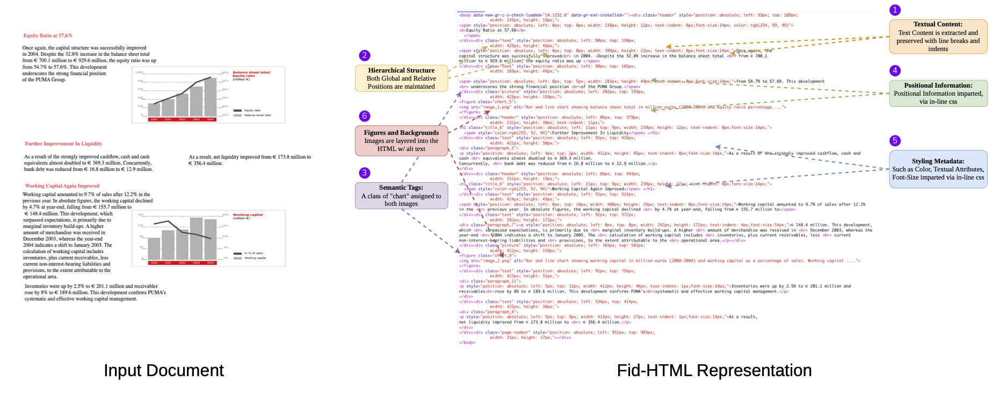

PDF documents integrate poorly with the web. To improve accessibility, they are frequently converted into HTML. Existing approaches for document-to-HTML conversion largely focus on retaining text and logical structure. However, the document's physical structure is not preserved — visual cues such as color and font style are overlooked, and design aspects such as content positioning are ignored.
To address these shortcomings, we introduce REPLICA, an agentic document-to-HTML framework that generates visually faithful, layout-aware, and semantically enriched HTML, which we refer to as Fid-HTML. Our approach generalises across diverse document types and multiple languages. For systematic evaluation, we introduce VFDR-Bench, spanning 15 languages and 15+ document types.
REPLICA achieves 93% visual fidelity, outperforming strong baselines including GPT-5 and Gemini 3 Pro. Notably, REPLICA with Qwen3-VL-8B achieves a 39% gain overall compared to Qwen3-VL-30B — despite being 3.75× smaller and operating at comparable inference time — highlighting the effectiveness of structured agentic design over brute-force scale. By preserving visual integrity and semantics in multilingual documents, REPLICA unlocks new possibilities for design-preserving translation, scalable access, and structured search.

fidhtml_diag_horizontal.png Not Found
fidhtml_diag_horizontal.pngPlease export your PDF to PNGFid-HTML: High-Fidelity Document Representation. REPLICA encodes documents across six complementary dimensions to jointly preserve semantics and visual fidelity.
Complete text retained at both word and block level.
Nested <div> containers reflecting sections, subsections, and logical groupings.
Structured elements such as <li>, <table>, <tr>, <td> with meaningful class names.
Global placement via absolute positioning; local alignment via relative containers and <p> wrappers.
Font size, color, bold, italics, underline, and strikethrough preserved as inline CSS.
Images and page-level backgrounds layered into the DOM with VLM-generated alt-text for accessibility.

Overview of REPLICA. The agentic framework constructs a hierarchical semantic layout (1 Segment), generates sub-HTML fragments via routed specialist agents (2 Localize), composes them with position- and reading-aware assembly (3 Assemble), and iteratively refines visual fidelity through font optimisation, background restoration, and VLM-based reflection (4 Refine), producing a high-fidelity final HTML document.
Builds a semantically grounded layout tree using an ensemble of flat, hierarchical, and text-segmentation detectors. A Labeling Agent uses Set-of-Mark prompting to assign semantic attributes; a Grouping Agent constructs the nested layout graph. For digitally-born PDFs, a structured parser extracts bounding boxes, text, and font metadata directly.
A Router Agent validates each region's semantic type and dispatches it to one of six specialist agents (text, table, image, form, list, equation). Agents invoke auxiliary tools — OCR, table structure recognition, style extraction — only when needed, enabling parallel sub-HTML generation.
A Position-Aware Merge tool performs bottom-up merging over the layout tree. A Reading-Order Agent evaluates textual continuity across block boundaries to compute a semantically grounded ordering relation, ensuring coherent flow even in multi-column layouts.
Font-size optimisation and background restoration are handled by deterministic tools. A Reflection Agent then compares rendered HTML against the source document in a closed loop, injecting targeted CSS corrections (e.g. shape-outside, padding) until visual alignment converges (max 5 iterations).
Segment: Doclayout-YOLO-v10 (flat layouts) · IndicDLP-YOLO-v10 (hierarchical) · Hi-SAM (text segmentation) · IoU-based ensemble fusion · Qwen3-VL-8B-Instruct for labeling and grouping.
Localize: All specialist agents use Qwen3-VL-8B · OCR via Gemma-3-4B-it · Word localisation via DocTR · Style extraction via TexTAR · Table grids via Surya TSR.
Assemble: Coordinate-based reading order with top-to-bottom, left-to-right column handling.
Refine: Font sizes optimised via textFit.js with Hi-SAM bounding box constraints · Backgrounds reconstructed via OpenCV inpainting · Reflection agent: Qwen3-VL-8B, max_iterations=5.
| Method | T.E. | L.S. NTED ↓ |
P.S. | V.F. VFS ↑ |
Overall Score | ||||
|---|---|---|---|---|---|---|---|---|---|
| WRR ↑ | CRR ↑ | LPS ↑ | GPS ↑ | OSall ↑ | OSen ↑ | OSzh ↑ | |||
| Marker | 0.68 | 0.82 | 0.61 | 0.19 | 0.34 | 0.74 | 0.53 | 0.60 | 0.45 |
| Docling | 0.40 | 0.49 | 0.62 | 0.17 | 0.26 | 0.55 | 0.38 | 0.45 | 0.12 |
| rolmOCR | 0.54 | 0.67 | 0.95 | 0.15 | 0.07 | 0.56 | 0.34 | 0.42 | 0.35 |
| smolDocling | 0.37 | 0.54 | 0.89 | 0.16 | 0.23 | 0.54 | 0.28 | 0.35 | 0.02 |
| olmOCR | 0.49 | 0.64 | 0.93 | 0.21 | 0.09 | 0.33 | 0.31 | 0.38 | 0.34 |
| Nanonets-OCR-s | 0.25 | 0.42 | 0.94 | 0.18 | 0.10 | 0.56 | 0.26 | 0.34 | 0.31 |
| GOT-OCR-2.0 | 0.36 | 0.39 | 0.93 | 0.15 | 0.25 | 0.70 | 0.32 | 0.49 | 0.10 |
| ChatDoc-OCRFlux | 0.30 | 0.38 | 0.88 | 0.15 | 0.24 | 0.44 | 0.27 | 0.39 | 0.34 |
| Qwen3-VL-30B | 0.66 | 0.79 | 0.59 | 0.22 | 0.30 | 0.43 | 0.47 | 0.48 | 0.31 |
| Gemma3 | 0.58 | 0.59 | 0.85 | 0.19 | 0.25 | 0.38 | 0.36 | 0.42 | 0.37 |
| InternVL3 | 0.06 | 0.30 | 0.82 | 0.19 | 0.29 | 0.31 | 0.22 | 0.29 | 0.27 |
| Gemini-2.5-Pro | 0.67 | 0.42 | 0.56 | 0.14 | 0.31 | 0.82 | 0.47 | 0.47 | 0.30 |
| GPT-5 | 0.65 | 0.79 | 0.49 | 0.21 | 0.43 | 0.86 | 0.58 | 0.62 | 0.50 |
| Webcode2m | 0.33 | 0.45 | 0.82 | 0.15 | 0.29 | 0.39 | 0.30 | 0.42 | 0.13 |
| Waffle VLM Websight | 0.14 | 0.42 | 0.84 | 0.11 | 0.29 | 0.19 | 0.22 | 0.27 | 0.11 |
| REPLICA (Ours) SOTA | 0.88 | 0.93 | 0.20 | 0.73 | 0.86 | 0.93 | 0.86 | 0.93 | 0.89 |
Performance improves consistently with each modular component, validating the agentic decomposition.
| Configuration | OS ↑ | VFS ↑ | GPS ↑ |
|---|---|---|---|
| Flat Layout (DLN only) | 0.53 | 0.74 | 0.34 |
| + Hierarchical Layout (IDLP-DLN) | 0.60 | 0.79 | 0.48 |
| + Hi-SAM (Full Segment) | 0.67 | 0.82 | 0.63 |
| + SoM in Segment | 0.71 | 0.85 | 0.69 |
| + Monolithic Localize (no Router & Specialists) | 0.76 | 0.88 | 0.72 |
| + Agentic Localize (Router + Specialists) | 0.86 | 0.90 | 0.77 |
| + Font-Size Fix | 0.89 | 0.92 | 0.79 |
| + Background Restore | 0.90 | 0.93 | 0.80 |
| + Reflection (Full REPLICA) | 0.93 | 0.97 | 0.83 |
| Category | Metric | Score |
|---|---|---|
| Segment Agent | ||
| Agnostic Text F1 (AT-F1) | 0.98 | |
| Agnostic Visual F1 (AV-F1) | 0.99 | |
| Hierarchy Consistency (HC) | 0.98 | |
| Localize & Reflection Agents | ||
| Routing Accuracy (RA) | 0.97 | |
| Sub-HTML Validity Rate (SVR) | 0.96 | |
| Reflection Gain (RG) | +0.06 | |
| Tools | ||
| Tool Call Success Rate (TCSR) | 0.995 | |
| Reading Order Accuracy (ROA) | 0.98 | |
| Font Fit Success (FFS) | 0.97 | |
| Background Stitch Success (BSS) | 0.96 | |
Fid-HTML's semantic richness and spatial fidelity unlock applications previously out of reach.

Downstream Applications of REPLICA enabled by Fid-HTML. (A) Layout-Preserving Document Translation · (B) Document Preservation · (C) Indexing & Searchability · (D) Grounded Document Intelligence · (E) Semantic Document Chunking for RAG · (F) Position-Aware Document Retrieval
Translated text flows within the original visual boundaries, preserving paragraph continuity and column structure across languages.
Historic newspapers, magazines, and archival documents are digitised into accessible, searchable web-native formats without losing design intent.
Semantic tags and preserved reading order make content fully searchable and indexable by standard web infrastructure.
Spatial and semantic metadata enable LLMs and VLMs to ground responses to precise document regions.
Logical hierarchy and positional information produce high-quality semantic chunks for Retrieval Augmented Generation pipelines.
Absolute bounding boxes and reading order enable retrieval systems to locate and cite evidence at the exact position in a document.
If you find REPLICA useful in your research, please cite:
@inproceedings{replica2026,
title = {REPLICA: An Agentic Framework for Visually Faithful
Document Reconstruction},
author = {R., Raghuveer and Sagar, Hrithik and Srinivasan, Anirudh},
booktitle = {Proceedings of the International Conference on Document Analysis and Recognition (ICDAR)},
year = {2026},
}